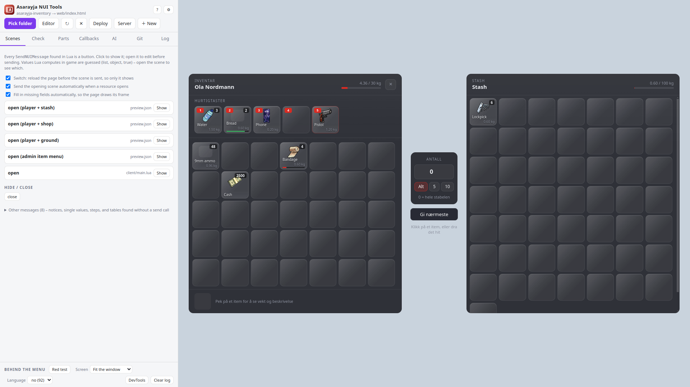
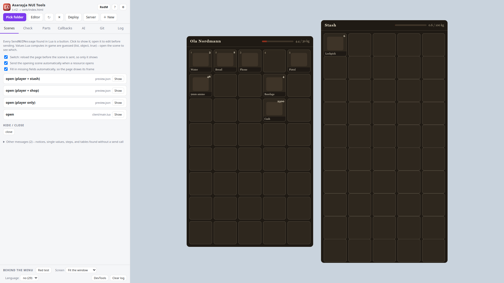
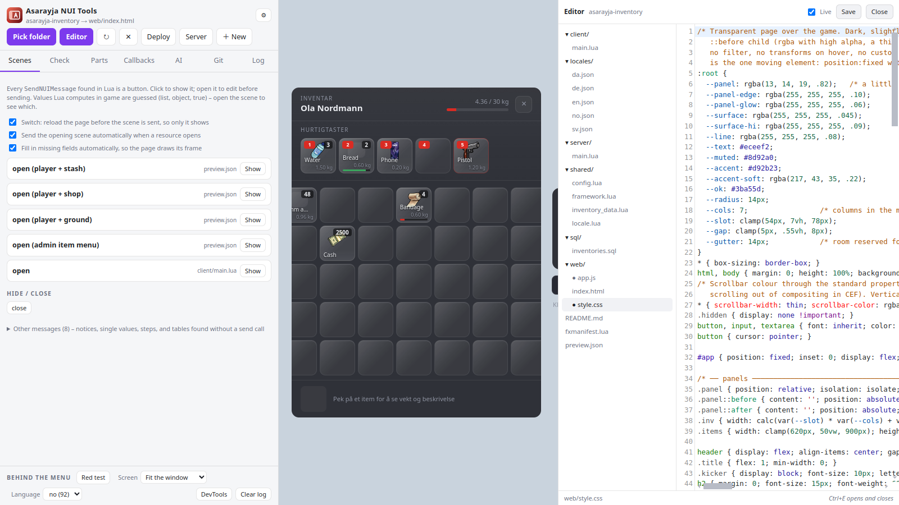
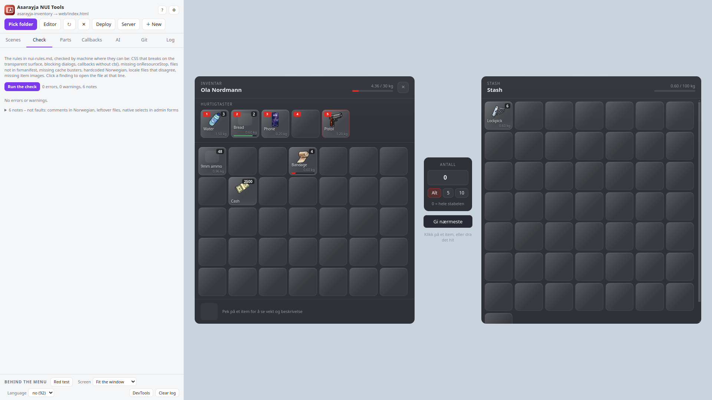
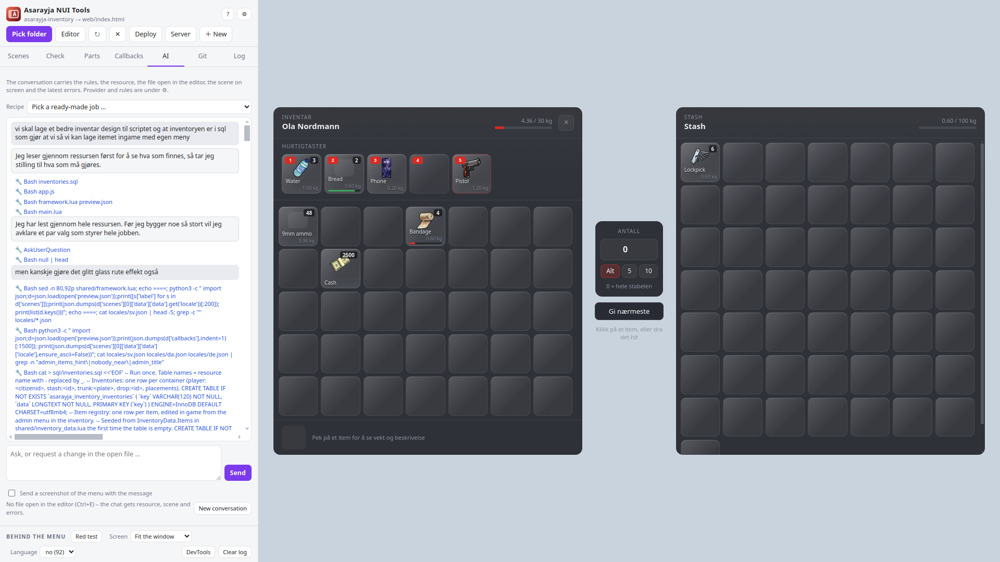
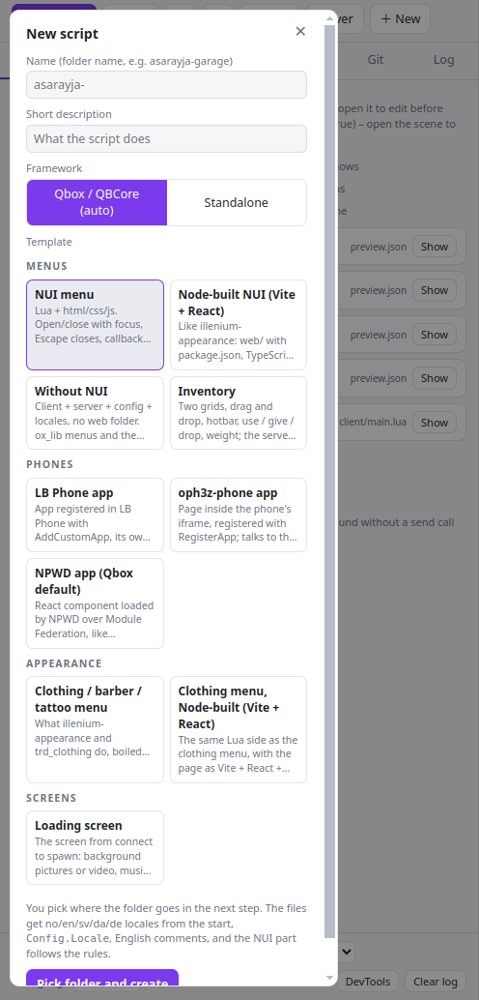
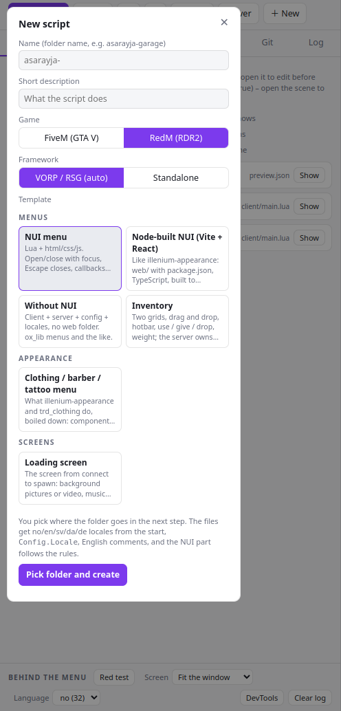
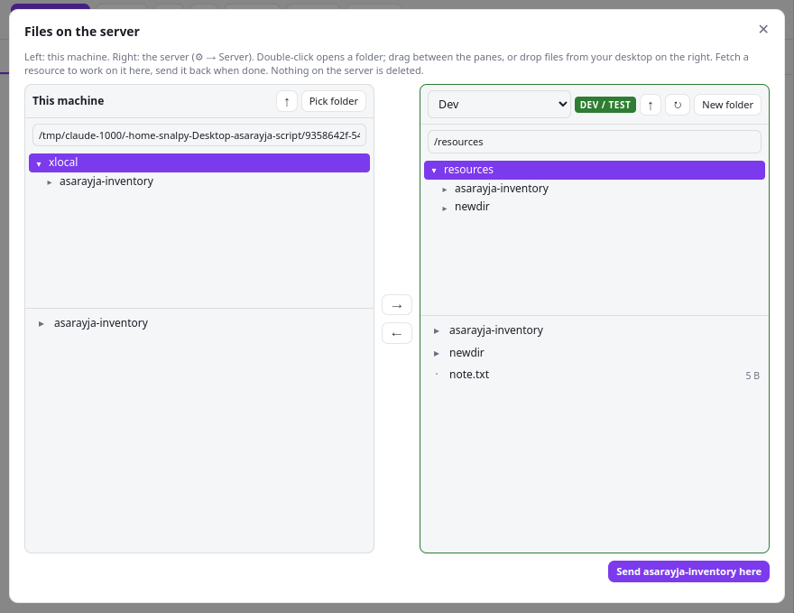
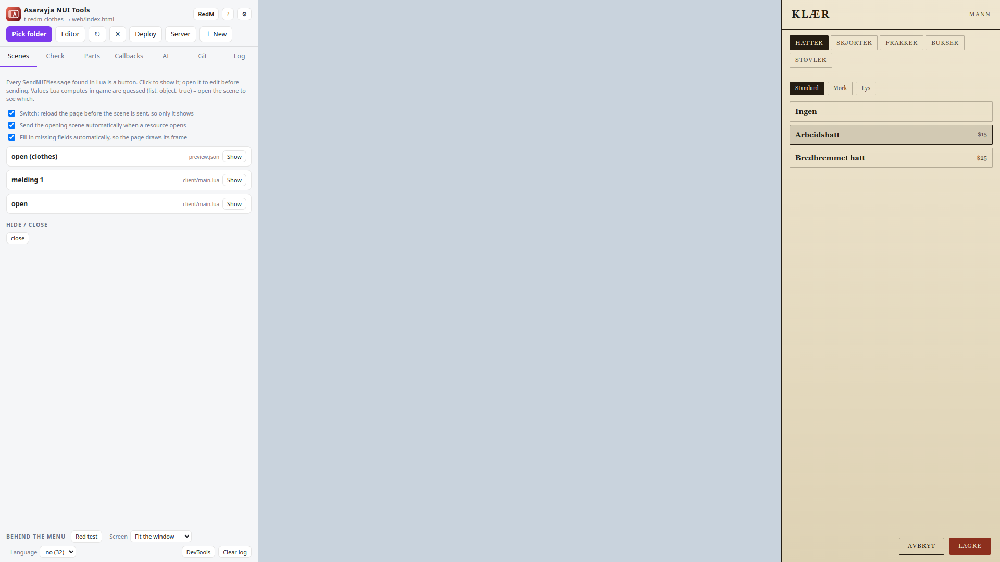

What it is
A RedM NUI is a web page drawn over the game. Normally you only see it in game: start the server, join, open the menu, find the bug, edit, restart the resource, repeat. Asarayja NUI Tools shows that page on your desktop instead. It reads the resource's Lua, finds every SendNUIMessage, guesses the data the game would send, answers the page's callbacks, and lets you edit HTML, CSS and JS while the menu is on screen.
A FiveM NUI is a web page drawn over the game. Normally you only see it in game: start the server, join, open the menu, find the bug, edit, restart the resource, repeat. Asarayja NUI Tools shows that page on your desktop instead. It reads the resource's Lua, finds every SendNUIMessage, guesses the data the game would send, answers the page's callbacks, and lets you edit HTML, CSS and JS while the menu is on screen.
Around that sits everything that came up while building a server's scripts: templates for new scripts and phone apps, a rule check for the mistakes that only show on the game's transparent surface, an AI tab that works under those rules, Git, and deploy or a file explorer against the server over SFTP or FTP.
RedM works the same way: the page is the same CEF surface, so everything here applies. What differs is the Lua around it, and that has its own section below.
Every message Lua can send is a button. Click it and the menu shows that state, filled with data guessed from the script's own config tables.
CSS applies while you type, HTML and JS on pause. The files as a folder tree, the ones the page really loads marked with a dot.
The NUI rules checked by machine: CSS that breaks in game, blocking dialogs, callbacks without cb(), files missing from the manifest, locale files that disagree.
Claude Code, Codex, Gemini or a local model, always with the rules as its standing instruction. Screenshots of the menu go with the message; every change can be undone per file.
New script from a template: NUI menu, tabbed app (MDT), HUD, DUI on a surface in the world, inventory, clothing menu, loading screen, LB Phone, NPWD and oph3z phone apps. Locales in eleven languages from the start (no, en, sv, da, de, fr, nl, es, pl, uk, ro).
New script from a template: NUI menu, tabbed app (MDT), HUD, Node-built NUI, without NUI and loading screen, in a western look with a VORP and RSG bridge. Locales in eleven languages from the start (no, en, sv, da, de, fr, nl, es, pl, uk, ro).
Deploy with one key, or browse the server like FileZilla: fetch a resource, edit it here, send it back. Production servers are marked red and ask first.
The script's own tables, read from its .sql files and from the Lua that makes them at startup, with the rows it ships. Edit a row and every page that reads that table is drawn with it. Kept beside the script; the .sql files are only read.
What the player sees after the click: notifications, progress bars, dialogs and context menus drawn with ox_lib's own page, the eye with ox_target's, and the script's keys pressed with the tool's own. Picking an option plays what the Lua behind it does.
Install
Windows: run the installer, or unzip the portable build anywhere. Linux: make the AppImage executable and run it, or install the .deb. New versions are downloaded in the background and offered when ready.
The first run
A short setup asks for the app language and which AI you want to use. It looks for the installed command-line tools (Claude Code, Codex, Gemini, Ollama). Everything can be changed later under ⚙ (Ctrl+,).
Open a resource
Pick folder and choose a resource folder (the one with fxmanifest.lua). Or choose a folder holding many scripts: they are listed under Scripts with the links between them, and the AI can work across them.
Show a scene
On the Scenes tab every message Lua can send is a button. Show sends it to the page. Open a scene to edit its data before sending. Lists the game fills at runtime are guessed from the script's config; a recorder resource can capture real data in game.
A page is opened the way its own resource opens it: the config and the language first, the message that puts the menu on screen, then the updates that fill it – and all of it once more, quietly, if the page was still loading the first time (a menu built with Svelte or React starts listening late). Messages the script sends through a wrapper of its own are followed to what they really send, every gate is answered yes, and a page that asks what this player may do is handed the whole list of its own permissions. That is the difference between a menu that opens on itself and one that opens on its login screen.
Three things happen while the page runs. What the page asked for collects every field it read that the message did not have – the viewer answers those with something believable so the menu draws, and that list is the same thing as the list of fields your Lua still has to send. A callback your Lua never answers is left unanswered, because that is what the game does: there is no timeout for one anywhere in the client, so the page waits for ever, and a viewer that answers anyway hides the most common way a menu dies on a live server. And a callback that only forwards – one serverRequest with the endpoint in the body, the way every MDT is built – is answered for the endpoint the page named, not with the guard at the top of the postbox.


Edit
Ctrl+E opens the editor next to the menu. Save with Ctrl+S; with Live on, CSS/HTML/JS save by themselves a moment after typing. The Red test paints the page background red so everything that would show the game through is visible. Measure it counts the same thing instead of asking your eye: how much of the surface stops the game, and every panel with what it measures against what its CSS promised.

Check
The Check tab runs the rules on the resource. Errors and warnings are things that break in game; notes are just notes. Click a finding to open the file at the line, or hand the list to the AI.
It compares the two halves of the script as well: a message Lua sends that no file in the page listens for, a file the page loads that is not there, two callbacks registered under the same name where only the last one answers, and the framework core called behind the bridge's back - qbx_core and qb-core, vorp_core and rsg-core alike.
It can know the natives as well. Cfx.re publishes what every native in GTA V and in the CFX namespace is called, what it takes and which side it lives on; the community's native database does the same for RDR2, which Cfx.re does not publish at all. Fetched once from Settings – they are not part of the app – they let Check say three things the game only says when it runs: a native that does not exist in the game this resource is for (fifty-five of those in the RedM ports here, all of them dead code carried over from a GTA original), a native that is not in that side's API (PlayerPedId() in a server file), and a native called with no arguments at all. Nothing gentler than that: a vector3 standing in for three floats, an output parameter that is returned instead of passed and a trailing argument left off are all correct Lua, and all three were tried and thrown out. The AI is handed the signatures for the game the open script is for, so a half-remembered argument list stops costing an evening in the F8 console.
One of those checks is about this tool itself. The game embeds a browser frozen at Chromium 103 – February 2024, and it has not moved since – while this viewer runs a Chromium thirty versions newer. That gap only matters in one direction, and it is the dangerous one: :has(), CSS nesting, container queries, color-mix(), Object.groupBy and toSorted() all look perfect here and do nothing whatsoever in the game. Nothing else could catch it – the page draws, the rules pass – so Check knows which feature arrived in which Chromium and says which one a script is using. The viewer also starts its browser with the two switches the game uses (no CORS, audio without a click), and answers alert() the way the game does: nothing drawn, and a line in the log saying the page would have frozen there.

Pages drawn in the world (DUI)
Some resources draw their page on a texture in the world instead of over the screen: a laptop on a desk, a sign by the road, a phone in a hand. That is a DUI, and it is never ui_page, so nothing finds it by looking at the manifest.
The app reads them out of the Lua - CreateDui and ox_lib's lib.dui:new - and lists them under Scenes with the size each one's texture is made at. Pick one and it is shown at exactly that size, because the page was written for those pixels and never scales. Messages from SendDuiMessage are scenes like any other.
A DUI has no focus and no cursor: the mouse is pushed in from Lua, and there is no keyboard native at all. It also has no GetParentResourceName(), so a DUI page builds its callback url from location.host - and the app leaves that global undefined on a DUI page, so a page that leans on it fails here the way it fails on the server. The check has its own section for all of it.
Let the AI work
On the AI tab describe the change. The AI gets the rules with every conversation, can see a screenshot of the menu, and asks before it does anything risky. The changes of a turn are listed with a diff and an Undo per file. Ctrl+Tab switches between the scripts it touched.

Templates
New script from a template: NUI menu, tabbed app (MDT), HUD, DUI on a surface in the world, inventory, clothing menu, loading screen, LB Phone, NPWD and oph3z phone apps. Locales in eleven languages from the start (no, en, sv, da, de, fr, nl, es, pl, uk, ro).
New script from a template: NUI menu, tabbed app (MDT), HUD, Node-built NUI, without NUI and loading screen, in a western look with a VORP and RSG bridge. Locales in eleven languages from the start (no, en, sv, da, de, fr, nl, es, pl, uk, ro).


Items: what they do, and how many there are
Two things about an item are easy to mix up, and they live in different places. What an item does belongs to the item: the animation, how long it takes, the hunger it restores, the health it gives back, whether it disappears when used. How many there are belongs to the shop it is sold in: the same item is finite in one shop and infinite in another, and the item itself does not know which shop it is sitting in.
In ox_inventory unlimited stock is the absence of a number: leave count out of the shop's price list and the shelf never empties; write count = 10 and the shop counts down, says sold out, and refills when the resource restarts (the stock is in memory, not in the database). An unlimited slot is never redrawn in the interface, a counted one is redrawn with a smaller number each time.
The inventory template writes both parts itself, without depending on any other resource. consume = { hunger = 30, usetime = 4000, anim = 'eating' } is the everyday case; effects = { { id = 'addHealth', amount = 30 }, { id = 'notification', text = '…' } } is everything else, as a list with a delay per effect. The half that is his screen and his ped runs on the client, the half that is his needs, his money and his items runs on the server, and neither runs the other's. Needs go through shared/framework.lua, because they are not the same number anywhere: Qbox and QBCore keep 0–100 as player metadata, rsg-core clamps the same names itself, and VORP keeps them in vorp_metabolism on a 0–1000 scale.
The tool shows what it honestly can: the progress bar for usetime, drawn with ox_lib's own page, the numbers changed on the test player, and the item gone from the inventory. What only the game can do – the animation, the prop in his hand, a screen effect – is said in the log instead of being faked.
Somebody to test with
A menu is about somebody, and outside the game there is nobody – so an inventory drew forty empty slots and an MDT was about "eksempel". The tool has one made-up character, shared by every script it opens: his name in the menu, his money in the bank, his job, his health and hunger, his items. He is kept in the tool's own settings, so he is still there next time, and nothing runs for him while no script is open. Nothing about him comes from a real server, and nothing about him is written into a script.
Ctrl+B opens the room behind him: the script's own tables first – read out of its .sql files and out of the Lua that makes them at startup, with the rows it ships – then the player. Rows can be edited, tables the tool cannot find can be added by hand, and everything can be exported as INSERT statements. The script's own .sql files are only ever read.
Ctrl+I gives him an item over the menu itself, so you watch it land in the inventory on screen. Using one follows ox_inventory's own rules: consume = 0 uses without removing, n >= 1 removes n and refuses when he carries fewer, and 0 < n < 1 wears the item down and splits a single unit off the stack.
The words a player reads
For somebody who is good at his own language and not at Lua. Ctrl+L lists every sentence in a resource and nothing else: no braces, no keys, no file to save. The locale files with the languages side by side – or one language at a time when you are writing a translation, with what another language says underneath and missing in no where a key has not been given yet – and the text written straight into the page or its script in its own group.
A change is written back into the same bytes it came from, escaped for the place it sits in, and the file is re-read first, so one that moved under the translator is refused rather than half-written. What the script fills in itself – ${n}, %s, {0}, a piece of markup – is protected: a change that would lose one is refused with the piece named.
It reads locale files (JSON and Lua, nested tables included), the page's html, its script, and its components. ps-mdt 3.1.4 has no locale files at all and keeps all 1978 of its sentences in 88 Svelte files; they are all there. Built output is skipped on purpose – a translation put there is lost on the next build – and what could not be read is named, with why. A resource that ships only its build – a release zip with web/dist and no source – is read anyway, with a line saying so, because a translation there is better than none. Any folder will do: the open script, another script in the open folder, or a folder of locale files somebody was handed to translate.
Training
Twenty-four lessons that teach it by writing it, opened with Ctrl+T. Each one builds a practice script from the same template the New button uses, takes out the one thing the lesson is about, and says what should happen. You fix it in the editor with the page on screen, and the tool marks the work with the scan, the rule check and the focus reading – not against a model answer, because there is more than one right way to write most of this.
Messages and the listener, opening and closing with focus, cb on every path out, GetParentResourceName, CSS that survives the game, words from the locale files, the framework bridge, a key the player can rebind, a target that does not show twice, an item that does something, rows from a table, and the RedM manifest.
Send it to the server
Under ⚙ → Server add your servers: a local folder, SFTP or FTP, each with a name and a role (production or dev). Deploy (Ctrl+D) replaces the resource on the server and restarts it over RCON. Server opens the file explorer for everything else.

RedM: VORP and RSG
Pick RedM under the settings, with Ctrl+G or on the button in the header, and everything follows: the templates you are offered, the manifest they get, the framework the bridge talks to, and the list of scripts you opened before.
VORP and RSG Core come out as the same Framework.* calls, so a script written here runs on both. The identity is the character (charIdentifier on VORP, citizenid on RSG), money is dollars and gold either way, and the callbacks go through the bridge.
A RedM resource needs game 'rdr3' and the mandatory rdr3_warning line, or the server refuses to start it. The check says so if it is missing.
RSG servers run ox_lib, VORP servers do not. The templates stay off it and go through the bridge instead, so the same script works on both.
The RedM menu template is cream paper on ink with an engraved frame and a serif face. Rockstar's fonts are not shipped; a server that runs vorp_menu can point at its own.
The phone apps, the inventory and the clothing menu templates stay on FiveM: RedM dresses a ped with MetaPed natives and has no LB Phone or NPWD.
The inventory template can take the kilos and the capacity from vorp_inventory or rsg-inventory, so the number matches what the player sees in game. The stash stays yours.
Many VORP scripts have no page of their own and open vorp_menu instead. Those show nothing here; a script with its own NUI works like any FiveM one.

Keyboard
| Ctrl+E | Open and close the editor |
|---|---|
| Ctrl+S | Save the file in the editor |
| Ctrl+D | Deploy the open resource |
| Ctrl+G | Switch between FiveM and RedM |
| Ctrl+, | Settings |
| Ctrl+Tab | Switch between the scripts the AI touched (workspace) |
| Alt+Enter | Send the message on the AI tab |
| Ctrl+B | The database and the player this script would have |
| Ctrl+I | Give the test player an item, over the menu |
| Ctrl+L | The words a player reads |
| Ctrl+T | Training: the lessons |
| Alt+1…9 | Press a key the script offers (Alt+Shift for the next nine) |
| F1 | This page |
| Esc | Close a dialog |
The rules, in short
The check and the AI follow one rule set, written from what actually went wrong in real scripts. The core of it:
Lua opens and closes the menu; Escape in the page sends close to Lua; onResourceStop releases focus.
Never alert, confirm or prompt: they freeze the page in game. Build your own modal.
No backdrop-filter, no transforms on hover, no custom scrollbars, backgrounds on a child element. Test with a red body.
Every RegisterNUICallback calls cb() on every path, or the page hangs.
Prices, access and validity are checked on the server, never trusted from the page.
Every text the player sees comes from locale files; comments in English.
The rdr3_warning line, no ox_lib, the character as the identity, item images per inventory, and some RSG pages that will not open without their token.